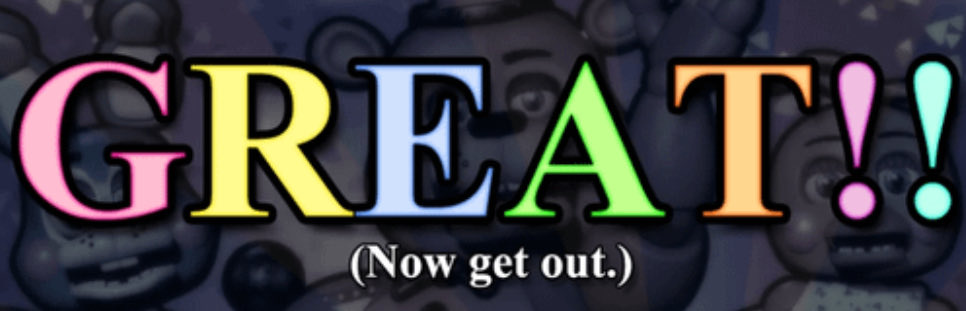

Предметы
Что и кто
Предметы могут быть получены самыми разными способами и они делятся на различные категории:инструменты , оружие,аксессуары,блоки,зелья,мебель и тд.

Предметы могут быть получены самыми разными способами и они делятся на различные категории:инструменты , оружие,аксессуары,блоки,зелья,мебель и тд.